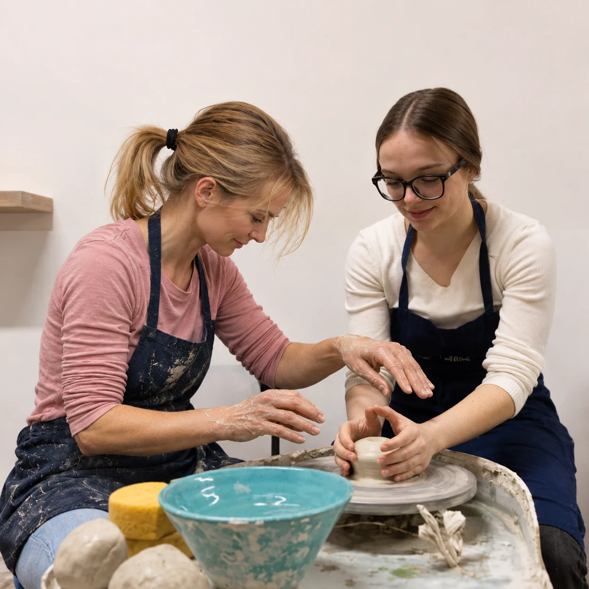
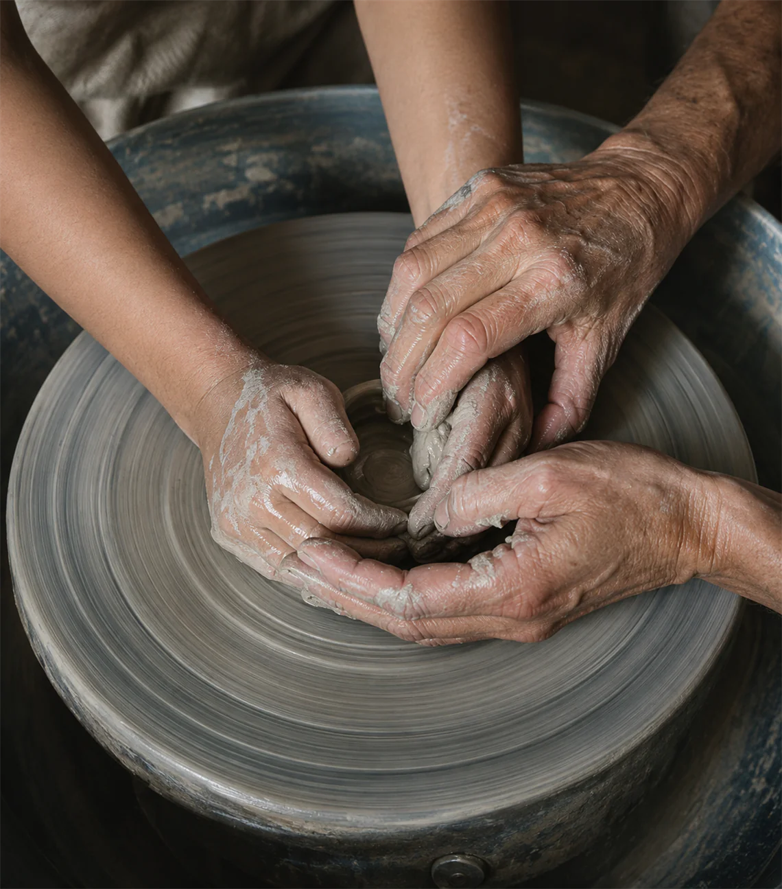
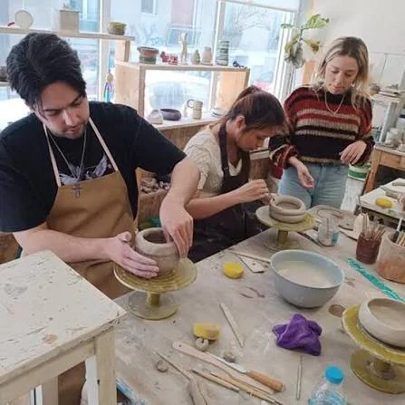
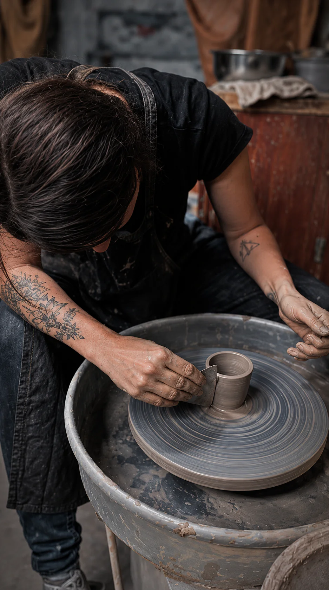
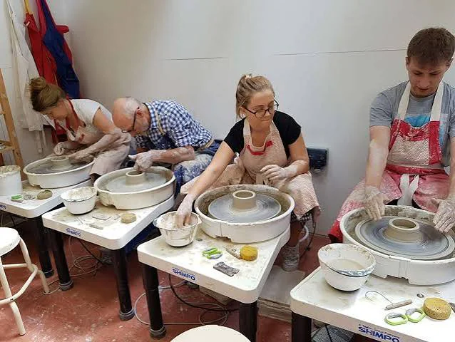
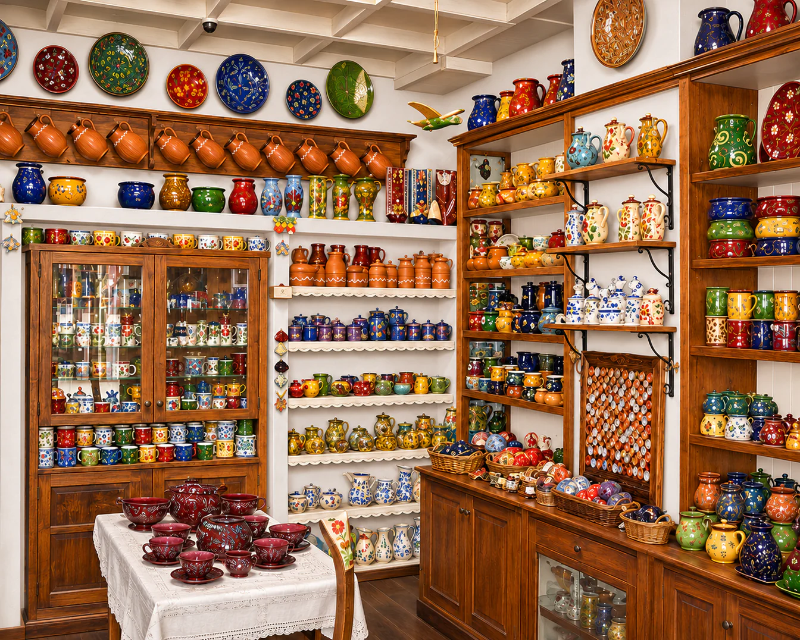

Most ülsz először koronghoz?
Egy alkalmas kóstolgató foglalkozásomon az alapoktól indulunk. Megmutatom, hogyan kerüljön középre az agyag, és hogyan kezdd el formázni. A foglalkozáson elkészíted az első tányérod, vagy poharad.
Kiscsoportos korongozás Fehér Dórával
Szentendrén, az Agyagpad Kerámiaműhelyben már az első alkalommal leülhetsz a koronghoz. Megmutatom az alapmozdulatokat, ezután te formázod meg az agyagot és elkészíted a saját tányérod, vagy poharad. Gyere el, próbáld ki a korongozást és készítsd el az első saját kerámiád!
Megnézem a foglalkozásokat
Egy alkalmas kóstolgató foglalkozásomon az alapoktól indulunk. Megmutatom, hogyan kerüljön középre az agyag, és hogyan kezdd el formázni. A foglalkozáson elkészíted az első tányérod, vagy poharad.
A kóstoló egyetlen alkalom. Jöhetsz egyedül, a pároddal vagy egy baráttal. Mindannyian odaülhettek a korongotokhoz és kipróbálhatjátok, hogyan lesz egy darab agyagból kész pohár vagy tányér.
Ha az agyag nem úgy formálódik, ahogy szeretnéd, odaülök melléd és mutatok egy fogást, amit rögtön kipróbálhatsz.
A foglalkozáson elkészített kerámiádat kiégetem és mázazom. A kész darabodat az utolsó foglalkozás után két héttel veheted át a műhelyben.
Vasárnap este megint úgy ér véget a hét, hogy mindenre jutott idő, csak arra a pár órára nem, amit magadnak szántál. Ha a korongozást is mindig későbbre teszed, az első saját kerámiád még várat magára. Egy háromórás kóstoló elég ahhoz, hogy leülj a koronghoz és megformázd az első darabodat.
Megnézem az időpontokatFehér Dóra keramikus vezetésével kiscsoportos korongozáson vehetsz részt. Egyedül, barátaiddal, vagy a munkatársaiddal együtt elkészítheted egy darab agyagból az első saját kerámia tárgyad.
Saját tempóban gyakorolhatsz.
Az agyag, a máz és mindkét égetés benne van a díjban.

Az Agyagpad Kerámiaműhely és bolt tulajdonosa. A műhelyben 2,5 éve vezetek korongozó foglalkozásokat.
A tanfolyamaimon kezdőket ismertetek meg az agyag formázásával és a korong használatával. Előzetes jelentkezés alapján jöhetsz a foglalkozásaimra. Érkezhetsz egyedül, a pároddal vagy a barátaiddal. Az Agyagpad Kerámiaműhely céges csapatépítő tréningek kedvelt helyszíne is. Gyere el hozzám Szentendrére és készítsd el az első saját kerámiád.

Ha most próbálnád ki először, itt megismerheted az alapmozdulatokat, és megformázhatsz egy kis tálat vagy poharat.
19 990 Ft / fő

Hetente egyszer találkozunk, összesen négy alkalommal. Lesz időd újra elővenni azt a mozdulatot, ami elsőre nehezen ment, és egyre önállóbban formázni.
69 900 Ft / fő

Délelőtt vezetett korongozással kezdünk. Az ebédszünet után újabb darabot formáztok, díszítetek és mázszínt választotok. A program 10:00–16:00 között tart, alkalmanként legfeljebb hat fővel.
49 900 Ft / fő
* Ha ugyanaz a cég legalább öt csapatnak foglal külön alkalmat, a díj 39 900 Ft / fő
Ha Szentendrén jársz, ugorj be hozzám a Duna korzón lévő kézműves boltomba, ahol a saját készítésű bögréimet, tálaimat és tányérjaimat találod. Vedd kézbe őket, és válaszd ki, melyikből innád szívesen a reggeli kávédat.
Nyitvatartás · Csütörtök–vasárnap, 10:00–18:00
Cím · 2000 Szentendre, Duna korzó 14.
Útvonaltervezés a műhelyhez
Nézd meg az órarendet.
A Tanfolyamok oldalon a négyhetes kurzus mind a négy dátumát megtalálod.
Jelentkezz a Kapcsolat oldalon.
Az űrlapon válaszd ki a foglalkozást és az időpontot, add meg az elérhetőségedet, majd nyomd meg a „Jelentkezem” gombot. A helyedet e-mailben igazolom vissza. Céges programhoz a kívánt napot és a létszámot add meg.
Gyere el korongozni.
A formázás után én gondoskodom a mázazásról és az égetésről. A kész darabodért két hét múlva jöhetsz vissza.
Nézd meg, mikor tudsz jönni, és küldd el a jelentkezésedet!
Tovább a jelentkezéshezA kóstolóra és a négyhetes tanfolyamra 16 éves kortól jöhetsz. 18 év alatt szülői hozzájárulás szükséges.
Teljesen kezdőként is leülhetsz a korong mellé. Megmutatom, hogy formázd az agyagot, hogy elkészülhessen a saját poharad vagy tányérod. Ha elakadsz, megmutatom a helyes mozdulatot.
Több, legfeljebb hatfős csoportnak egyeztetünk külön alkalmat. Az időpontkérésben add meg, hány csoporttal és milyen létszámmal számoltok.
Persze. Csütörtöktől vasárnapig 10:00 és 18:00 között várlak. A bögréket, tálakat és tányérokat a helyszínen kézbe is veheted.